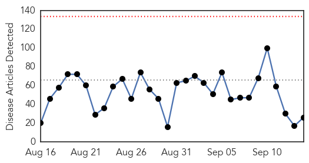
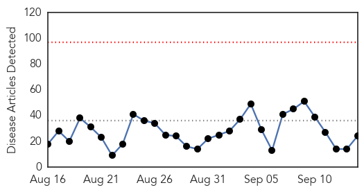
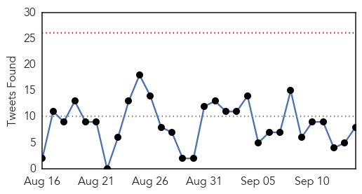
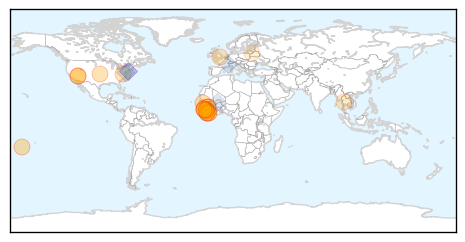
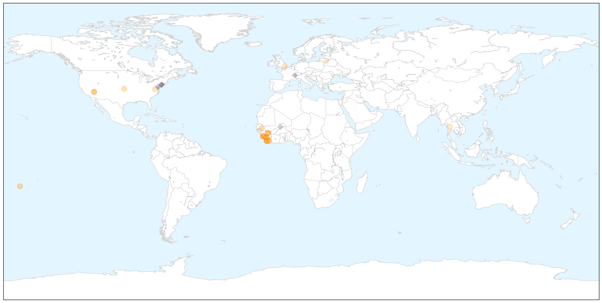

Unknown
30-Day Web Trend
0 alerts, 0 warnings

30-Day Twitter Trend
7 alerts, 0 warnings

Article Locations


Article Confidences

Top Articles:
- 0.955
- UTHealth's Paula Stigler-Granados awarded grant to conduct outreach, education on Chagas disease in South Texas
- 0.946
- Minnesota Salmonella Outbreak Linked to Chipotle Franchises
- 0.943
- UTHealth researcher awarded CDC grant to study Chagas disease in Texas
- 0.939
- Alaska officials warn of spike in 'beaver fever' infections
- 0.929
- Legionnaire's disease on an outbreak
- 0.922
- Latest Newry News, Newry Sport and Newry Business for Newry City
- 0.903
- Flu vaccinations are now available
- 0.888
- Shortage of doctors hits services
- 0.869
- Salmonella outbreak leads to second death
- 0.825
- AES cases raise health alert
- 0.788
- State issues warning about cucumbers from Mexico
- 0.710
- Snake Bite Cases Expected to Rise During El Nino, According to Study
- 0.706
- Latest News from India,Politics,Bollywood,Business,Sport
- 0.648
- Was case of 'bird lung' an allergy or infection?
- 0.643
- Chronic Wasting Disease Archives
- 0.632
- One Symptom in New Medical Codes: Doctor Anxiety
- 0.623
- KUNA : Health Min. to investigate fatalities, heath problems caused by medical errors
- 0.623
- WAFF-TV: News, Weather and Sports for Huntsville, AL
- 0.613
- Was case of ‘bird lung’ an allergy or infection?
- 0.586
- France to vaccinate livestock following bluetongue outbreak
- 0.582
- News, Sports, Jobs, Community Information - Parkersburg News and Sentinel
- 0.558
- Janssen's STELARA® (Ustekinumab) Available in the UK for the Treatment of Adolescents With Moderate-to-Severe Psoriasis
- 0.554
- Wildfire and Private Water Wells
- 0.531
- Madagascar plans to immunize 11.3 mln children against poliomyelitis - Xinhua
- 0.521
- Latest Political News, Business, Sports News, Entertainment News World News, Features, Video and Infographics
- 0.507
- World: WHO supports European countries in managing health needs of refugee and migrant influxes
Top Tweets:
-
No tweets found for Sep 14, 2015
Ebola
30-Day Web Trend
0 alerts, 0 warnings

30-Day Twitter Trend
0 alerts, 0 warnings

Article Locations

X

Article Confidences

Top Articles:
- 1.000
- New Ebola death in S.Leone dims optimism for epidemic's end
- 1.000
- News Scan for Sep 14, 2015
- 1.000
- New Ebola death in S.Leone dims optimism for epidemic's end
- 0.999
- Hundreds quarantined as Ebola returns to north Sierra Leone district
- 0.999
- New Ebola death in Sierra Leone
- 0.999
- Ebola workshop prepares for the worst
- 0.998
- Hundreds quarantined following new Ebola fatality in Sierra Leone
- 0.998
- Quarantines return as Ebola makes comeback in Sierra Leone
- 0.998
- Hundreds quarantined as Ebola returns to north Sierra Leone district
- 0.995
- LIBERIA: Ebola Deaths Rise In Liberia, Health Minister Confirms
- 0.993
- Former Las Vegan travels the world to fight diseases
- 0.986
- Waves of Grace: An Ebola Survivor's Story in Virtual-Reality
- 0.985
- Two Doctors Find Possible Cure for Ebola, Costing Under $10
- 0.907
- Ellen, Boakai receive post-Ebola honor
- 0.897
- DARPA is developing human bio-factories to brew lifesaving vaccines
- 0.868
- ‘A Show of Solidarity’: Ellen Extols IMF Managing Director
- 0.857
- Better surveillance and improved sampling tactics of wild animal populations could impact public health
- 0.716
- ‘No regrets’ for Fife Ebola nurse Pauline Cafferkey
- 0.673
- UN to give more support to reproductive health « Awoko Newspaper
- 0.670
- Improving the resilience and workforce of health systems for women’s, children’s, and adolescents’ health
- 0.618
- Ebola, Education And Innovation In Sierra Leone - Sierra Leone
- 0.590
- IMF commits to post-Ebola recovery here
- 0.575
- WOLTERS KLUWER : WHOs HINARI Program Partners with Wolters Kluwer to Provide UpToDate to Ebola-affected African Countries
- 0.547
- WHO urges European action on migrant health
Top Tweets:
- 0.838
- New Ebola death in Sierra Leone - Yahoo News http://t.co/uIRZFQPbnA ebola EVD
- 0.749
- RT: RD: Recent Ebola outbreak demonstrated that the int'l community not prepared for major health concerns. This is a defining …
- 0.646
- DCHHS recognized by CDC for handling of 2014 Ebola outbreak - Star Local Media http://t.co/KzgtDjgsj5 ebola EVD
- 0.623
- RT: A 16yr old girl in Bombali district near Guinea border tests positive for Ebola brings SierraLeone's weekly tally…
- 0.605
- RT: Decoding Ebola: Next-Generation Sequencing of the Ebola Genome for the FDA ARGOS Database http://t.co/5IwqbWEtU2
- 0.552
- Should Apes Be Saved From Ebola? - The Atlantic http://t.co/vo5kVt7VgE ebola EVD
- 0.529
- RT: Migrants in car arrive with Ebola in Europe ebola migrantcrisis migrants refugeescrisis refugeeswelcome https://…
- 0.528
- Genetic Mutations Identified That Help Ebola Virus Evade Drug Treatment -... http://t.co/2KnyLOLd5W